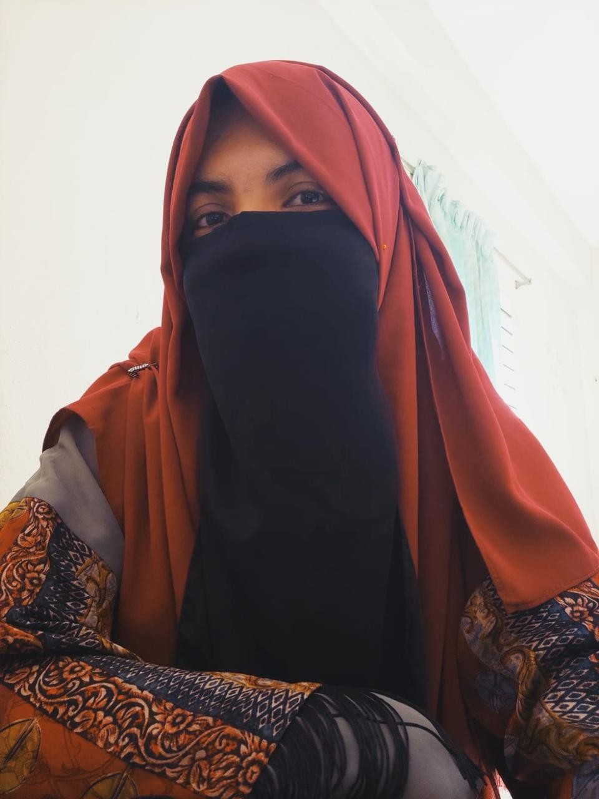

BSc in Computer Science and Engineering
Daffodil International University, Bangladesh
Current student
PROFILE
Computer Science and Engineering student at Daffodil International University with academic and project experience in machine learning, explainable AI, software development and IoT-based systems.
Currently engaged in research on postpartum depression classification using machine learning, SHAP-based feature explanations and DiCE-based counterfactual explanations. Interested in building practical, interpretable and user-focused technology solutions.
EDUCATION
03 MILESTONESDaffodil International University, Bangladesh
Current studentJashore Government Michael Madhusudan College, Jashore
GPA: 5.00 / 5.00Jashore Government Girls' School, Jashore
GPA: 5.00 / 5.00WHAT DRIVES MY WORK
Core technical areas reflected in my academic work and personal interests.
Exploring data-driven models for classification and practical problem solving.
Making model predictions easier to understand through SHAP and DiCE.
Building practical systems with software development, databases and connected devices.